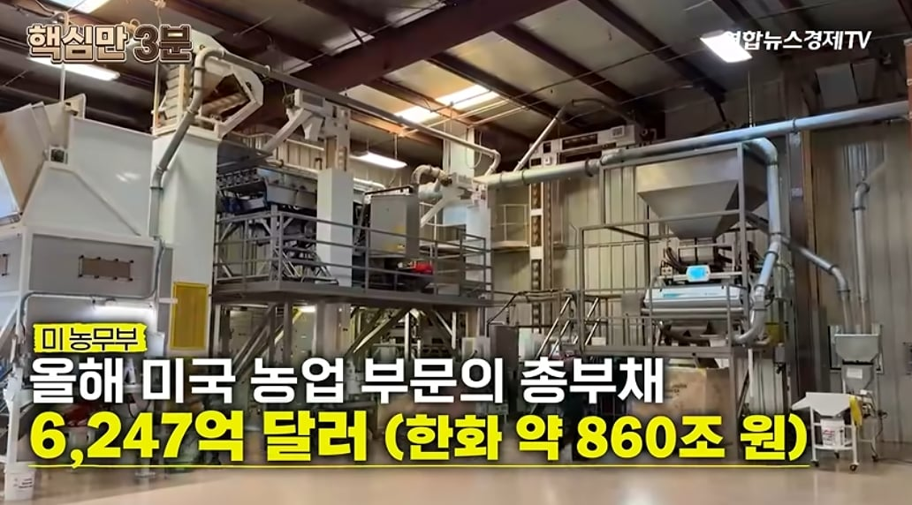
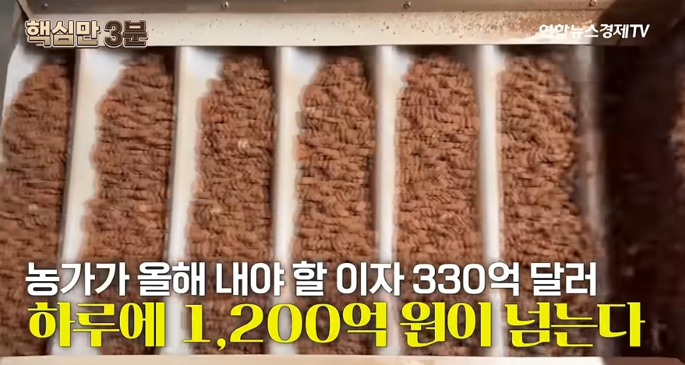
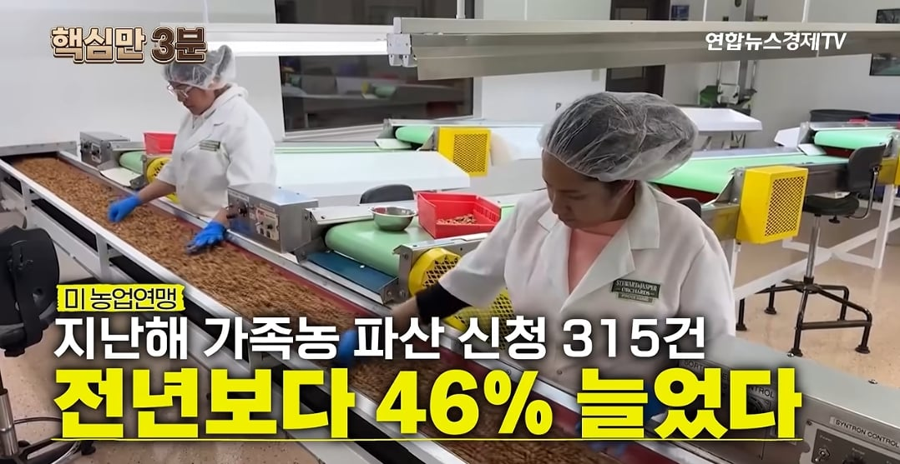
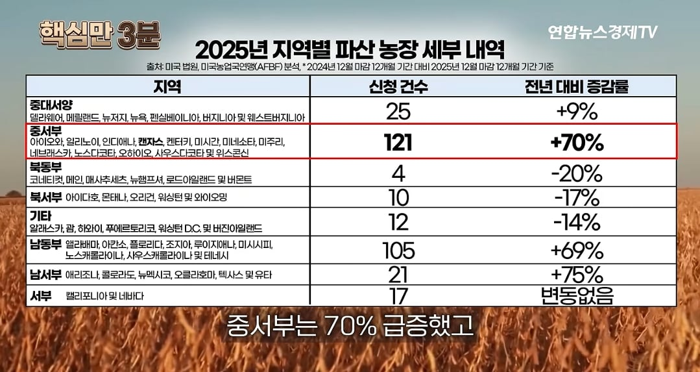
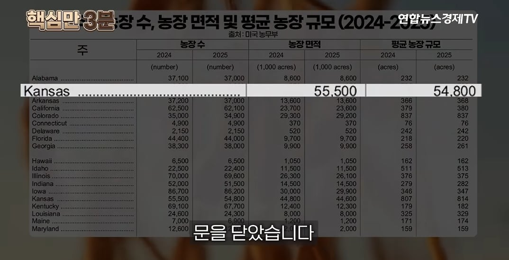

농무부 피셜 올해 새로생기 총 부채만 약 860조인데 올해 우리나라 예산이 727조임

그로인해 내야 할 이자만 하루 1200억

미국은 대대로 땅을 물려주면서 농업을 하는 가족농이 대다수인데 작년보다 파산건수가 46% 증가

특히 대깨공이라 할만큼 공화당만 뽑기로 유명한 중서부 지역은 가족농 파산신청건수가 무려 작년대비 70% 증가

그중에서 제일 심각한건 캔자스주인데 올해만 700개의 가족농이 파산함
트럼프가 캔자스에서 유세로 80억달러 상당의 긴급 자금지원이 있을것처럼 말했지만 실상은 아직 예산도 없고 내년 초에나 실행될 계획이라 그냥 미국 농가들은 그냥 개좆망함
파산 농가 숫자잖아 적을수록 좋은건데 어떻게이해한거냐